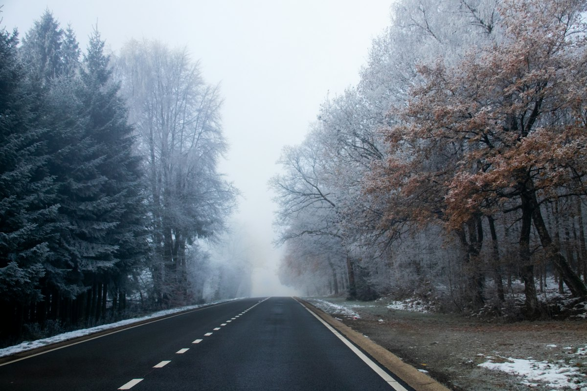

1e
Eerste graad
- Richtingaanwijzer niet gebruiken
- Fout parkeren zonder gevaar
- Onnodig links rijden
- Zone 30 negeren
STUDIO | VERKEER is de verkeersrechtpraktijk van advocatenkantoor STUDIO | LEGALE. Vanuit Antwerpen en Brussel staan we bestuurders en verkeersslachtoffers bij, voor politierechtbanken in heel België.

Kies wat op jou van toepassing is. Je leest wat we voor je kunnen doen en welke documenten je best al bij de hand hebt.
Een onmiddellijke inning, een voorstel tot minnelijke schikking, een GAS-boete van de gemeente of een reeks boetes na een trajectcontrole. Wat je precies kreeg, bepaalt welke mogelijkheden je nog hebt. Kijk dat na voor je betaalt of een termijn laat verlopen.
Op een dagvaarding staat de datum van je zitting. Neem tijdig contact op, zodat er genoeg tijd is om het strafdossier in te kijken en je verweer voor te bereiden. Of je zelf moet verschijnen, bespreken we vooraf met je.
Na een onmiddellijke intrekking van je rijbewijs of een rijverbod door de rechter heb je meteen vragen. Hoelang duurt het? Wat betekent het voor je werk? Soms kan je vragen om je rijbewijs vroeger terug te krijgen. Of dat in jouw geval kan, bekijken we samen.
Na een positieve test volgt vaak een intrekking van je rijbewijs en een zaak voor de politierechtbank. We bekijken hoe de controle en de vaststelling verlopen zijn, en bereiden je zaak zorgvuldig voor.
Als bestuurder of als slachtoffer. Na een ongeval met gewonden, na vluchtmisdrijf of wanneer iemand de plaats van het ongeval verliet. We helpen bij de strafzaak en bij het vorderen van je schade.
Rijden zonder geldig rijbewijs, zonder verzekering of tijdens een rijverbod wordt als zwaar beschouwd. Laat je bijstaan voor je zaak voorkomt, zodat je weet waar je staat.
Verkeersovertredingen zijn ingedeeld in vier graden. Hoe hoger de graad, hoe zwaarder de mogelijke straf. Enkele voorbeelden.
Daarnaast zijn er overtredingen die apart behandeld worden: rijden onder invloed, rijden zonder rijbewijs of verzekering, rijden tijdens een rijverbod, een radardetector gebruiken, ongevallen met letsel en agressie in het verkeer.
Een zaak voor de politierechtbank is voor de meeste mensen een eerste keer. We leggen elke stap uit, in gewone woorden.
Veel mensen hebben er een zonder het te weten, bijvoorbeeld bij hun autoverzekering of hun familiale. In veel gevallen komt die tussen in de kosten van je advocaat. Je kiest daarbij zelf je advocaat.
Op kantoor ontvangen we je op afspraak. Voor de zitting komen we naar de politierechtbank waar je zaak behandeld wordt.
Woon je verder weg? Ook dan kan je bij ons terecht. Veel kan per mail en telefoon.
Staat je vraag er niet bij? Bel 03 216 70 70 of mail naar info@studio-legale.be.
Zo snel mogelijk, zeker als er een datum of een termijn op je brief staat. Hoe vroeger we je dossier kennen, hoe meer tijd er is om je zaak goed voor te bereiden.
Dat kies je zelf. Wie betaalt, vermijdt meestal een zaak voor de rechtbank. Wie niet betaalt, kan gedagvaard worden. Twijfel je, vraag dan advies voor de betaaltermijn verloopt.
Dat hangt af van je zaak. In veel gevallen kan je advocaat je vertegenwoordigen. Of je zelf aanwezig moet of beter aanwezig bent, bespreken we vooraf met je.
Een eerste advies vraag je gratis aan. Daarna hangt het af van je dossier. Heb je een rechtsbijstandsverzekering, dan komt die in veel gevallen tussen. In elk geval bespreken we de kosten vooraf.
Ja. Onze kantoren zijn in Antwerpen en Brussel, maar we staan mensen bij voor politierechtbanken in heel België.
Een paar zinnen volstaan. We nemen contact met je op om te bekijken wat we voor je kunnen doen. Alles wat je ons vertelt, blijft vertrouwelijk.
Velden zonder vermelding zijn nodig om je te kunnen contacteren.
We hebben je vraag goed ontvangen en nemen zo snel mogelijk contact met je op. Heb je een brief of dagvaarding, hou die dan bij de hand.
Ik maakte deze demo voor jullie om te tonen wat er kan. Na een kort gesprek maak ik er iets veel persoonlijkers van, helemaal naar jullie wens.
Vrijblijvend. Ik kom langs of we bellen.
Op maat, op jullie eigen domein.
Geen voorschot. Jullie betalen pas als alles klaar is.
Hosting, domeinnaam en kleine wijzigingen, zoals nieuwe openingsuren.
Omdat een voorbeeld meer zegt dan een mail. Zo zien jullie meteen wat er kan, en het kost jullie niets.
Nee. Het gesprek is vrijblijvend. Vinden jullie het niks, dan is het daarmee gedaan.
Na ons gesprek staat jullie site binnen 10 tot 14 dagen online.
Zeker. Jullie domeinnaam kan gewoon blijven, de nieuwe site komt in de plaats van de oude.
Nee, dat doe ik op basis van ons gesprek. Eigen foto's zijn mooi meegenomen, maar niet nodig om te starten.